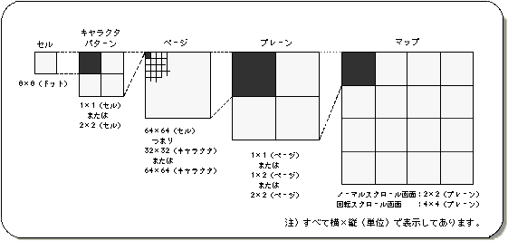

Return to previous page | Return to menu | Go to next page
A scroll is a collection of fine dots (dots) projected on a monitor. In order to handle this point efficiently, SGL adopts the scroll unit system as shown below.
A set of 8 x 8 dot points is called a cell, and when dealing with scrolling, we will proceed with this cell as the smallest unit. These cells are gathered together to form a character pattern, and these are gathered together to create a map.

Note) All are displayed in horizontal x vertical (unit).
Sega Saturn's hardware includes a function that handles scrolling in dot units (called bitmaps) instead of cell units, but this manual does not explain it.
However, functions that support some scrolling functions, including bitmaps, are included in the SGL library, and those functions are briefly explained in the “Function Reference” section of the Reference Manual.
Please refer to “HARDWARE MANUAL vol.2” and “Function Reference” in the Reference Manual for some functions including bitmap mode.